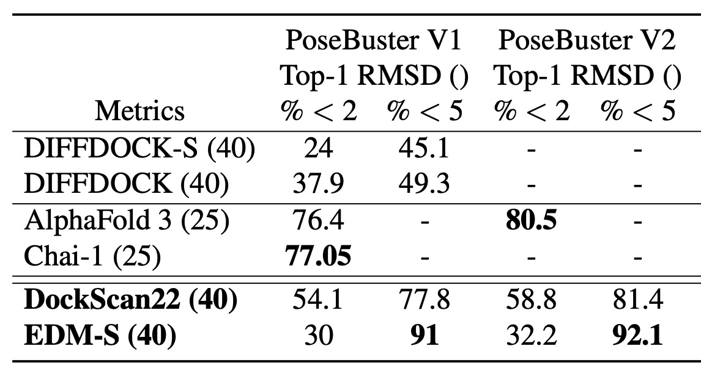
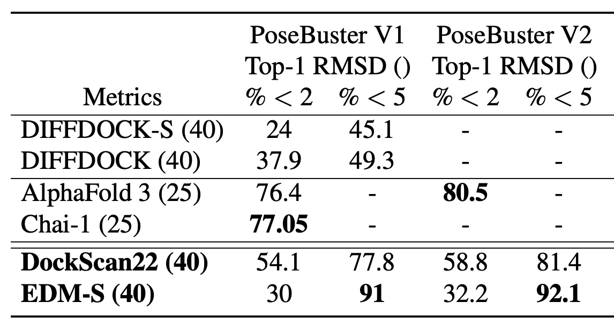
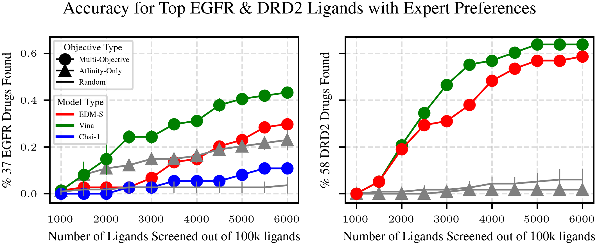

Preferential Multi-Objective Bayesian Optimization for Drug Discovery
Tai Dang
RHF.AI & Stanford University
Preferential Multi-Objective Bayesian Optimization for Drug Discovery
Outline
- Problem Setup
- Preference Elicitation from Pairwise Comparisons
- Benchmarking Docking Models
- Chemist-guided Active Virtual Screening
1.Problem Setup
For a given protein linked to a certain disease, the goal of virtual screening is to select a few small molecules (i.e., ligand) from a library of millions candidates such that the selected candidate will have the highest utility in disease treating.
1.Overview: Challenges in Virtual Screening
Problem: Large-scale virtual screening is computationally expensive.
- Computational Waste: Exhaustive docking wastes resources on low-quality hits.
- Manual Hit Selection: Slow, labor-intensive evaluation by chemists.
- Single-Objective Focus: Prioritizing affinity ignores other critical properties.
- Result: Wasted effort on unsuitable candidates.
→ Need: A more efficient, expert-informed, multi-objective approach.
1.Our Solution: Chemist-Guided Active Screening
Core Idea: Leverage Preferential Multi-Objective Bayesian Optimization.
Key Innovation: Guide the optimization using chemists’ intuition
- Manually weighting multiple objectives is difficult & subjective.
- Instead, we learn the expert's preferred trade-offs from simple pairwise choices ('Is Ligand A generally preferable to Ligand B?').
Outline
- Problem Setup
- Preference Elicitation from Pairwise Comparisons
- Benchmarking Docking Models
- Chemist-guided Active Virtual Screening
2.Preference Elicitation from Pairwise Comparisons
Problem: Traditional virtual screening prioritizes binding affinity but ignores other key drug properties (e.g., toxicity, solubility), making hit selection inefficient.
Solution: Leverage preference learning to model expert intuition, capturing trade-offs between multiple ligand properties through pairwise comparisons.
2.Preference Elicitation from Pairwise Comparisons
Learning a preference model from binary data is equivalent to training a classifier.
Given two ligands $\ell_1$ and $\ell_2$ with properties $x_{\ell_1}$ and $x_{\ell_2}$ (e.g., affinity, toxicity, solubility), we model their preference as:$$p(\ell_1 \succ \ell_2 \mid x_{\ell_1}, x_{\ell_2}) = \frac{e^{f(x_{\ell_1})}}{e^{f(x_{\ell_1})} + e^{f(x_{\ell_2})}}$$
$$= \frac{1}{1 + e^{-[f(x_{\ell_1}) - f(x_{\ell_2})]}}$$
$$= \sigma(f(x_{\ell_1}) - f(x_{\ell_2}))$$
where $\sigma(\cdot)$ is the sigmoid function, mapping the difference in ligand scores to a preference probability.2.Preference Elicitation from Pairwise Comparisons
Approach: We train a preference model using ligand properties (binding affinity, lipophilicity, molecular weight, half-life) as input. The utility function $f$ is modeled using a pairwise Gaussian Process.
Synthetic: Generate 1,200 pairwise comparisons using synthetic functions
Human: Experts rank ligands given a protein, generating pairwise comparisons.
Evaluation:
2.Preference Elicitation from Pairwise Comparisons

Outline
- Problem Setup
- Preference Elicitation from Pairwise Comparisons
- Benchmarking Docking Models
- Chemist-guided Active Virtual Screening
3.Benchmarking Docking Models
Problem: While traditional docking tools like Vina (especially GPU-accelerated versions) are already fast, it’s unclear how newer diffusion-based docking models compare in speed and accuracy.
Solution: Benchmark our diffusion-based docking models against Vina to evaluate performance, runtime, and flexibility in modeling ligand conformations.
3.Diffusion Model: Why used for docking?
Why Use Diffusion Models for Molecules?

3.Diffusion Model: Training Data
The PDB database is limited:
- Contains only ~17,000 protein-ligand pairs.
- Features around 5,000 unique proteins.
For robust diffusion model training, millions of diverse data points are needed. Data augmentation enhances:
- Ligand Diversity: Broader chemical structure and property range.
- Protein Diversity: Wider variety of binding sites for better model generalization.
Data augmentation techniques create a richer dataset, boosting model performance.
3.Diffusion Model: Training Data
Data Augmentation Techniques:
- Molecular Dynamics: Employed 59,330 dynamic frames of 14,387 protein-ligand complexes to model ligand flexibility, amounting to 75K training data.
- Data Crawling: Curated 322K protein-ligand complexes, yielding 80K unique proteins.
- Pharmacophore Alignment: Generated up to 11M pharmacophore-consistent ligand pairs, significantly expanding the ligand training data.


3.Diffusion Model: Results
Benchmark on Posebusters Dataset: released post-2021 in PDB. Performance: % of ligand pairs with RMSD < 2 Å in pocket alignment.
Most diffusion models optimize for RMSD, but RMSD only measures geometric similarity.
Why RMSD Falls Short: Low RMSD (<2Å) can still cause steric clashes and fails to capture a ligand’s regulatory potential.
 

3.Docking Efficiency Benchmark on EGFR
- Traditional Tools (e.g., Vina, Smina): ~1.5s per pose
- Chai (AlphaFold3-like): ~1.5 min for 5 pose
- Our Diffusion Model: ~10s for 128 poses


Outline
- Problem Setup
- Preference Elicitation from Pairwise Comparisons
- Benchmarking Docking Models
- Chemist-guided Active Virtual Screening
4.CheapVS
These implicit expert knowledge, encoded as preferences over ligands, are valuable to elicit for effective virtual screening. We can leverage toolkits from the field of machine learning from human preferences to tackle this challenge.
| First ligand | Second ligand | Preference $(x_1 \succ x_2)$ |
|---|---|---|
| [-7.81, 113.38, 0.51] | [-8.12, 116.28, 0.47] | 0 |
| [-10.45, 186.17, 0.29] | [-8.12, 116.28, 0.47] | 1 |
| [-6.18, 35.32, 0.83] | [-8.12, 116.28, 0.47] | 0 |
Each ligand is represented by a set of features, such as affinity, polar surface area, QED drug-likeness score
4.CheapVS: Algorithm
CheapVS Loop:
- Select: Choose informative ligands (Acquisition Function).
- Predict: Get docking scores (affinity).
- Feedback: Obtain Chemist's pairwise preferences.
- Learn: Update multi-objective utility (GP) from preferences.
- Guide Selection: Updated utility informs the next acquisition step.
Output: Top compounds based on learned utility.

4.CheapVS: App for Chemist

4.CheapVS: Experiment Setup
Experiments on EGFR and DRD2.
- Screening library: 100K molecules.
- 37 and 58 FDA-approved or late-stage drugs as goal-optimal molecules.
- Expert-labeled preferences for multi-objective optimization.
- Multi Objectives: 4 for EGFR, 5 for DRD2.
- BO samples 1%, adds 0.5% per iteration (10 iterations, 6% total).
4.CheapVS: Target’s objectives
4.CheapVS: Results
4. CheapVS: GP Elicitation

4.CheapVS: Multi-Objective Trade-Off
Single-objective fails to capture trade-offs in drug discovery. Understanding how ligand properties interact helps us model expert preferences more accurately.Approach: Model interactions between continuous ligand properties using linear regression, incorporating higher-order terms to capture complex dependencies.
$$y = x_1w_1 + x_2w_2 + x_1x_2w_3$$
where $y$ is the utility score, and $x_1$, $x_2$ are ligand properties.
Hypothesis: Higher-order interactions improve prediction performance by capturing complex dependencies among ligand properties.
4.CheapVS: Multi-Objective Trade-Off Results

Key Finding:
5. Q&A and Thank you for listening!
- For more details, please check out this paper on arXiv or scan this QR code